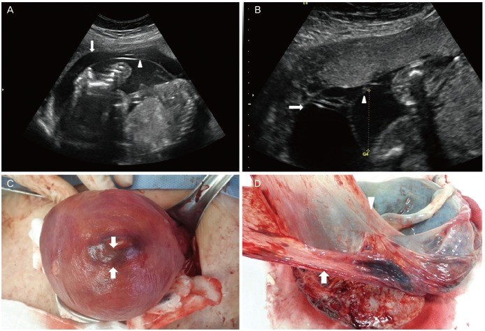
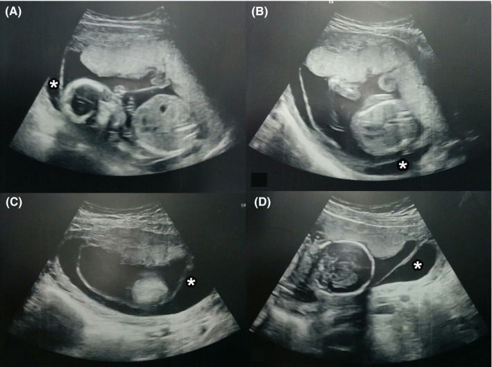
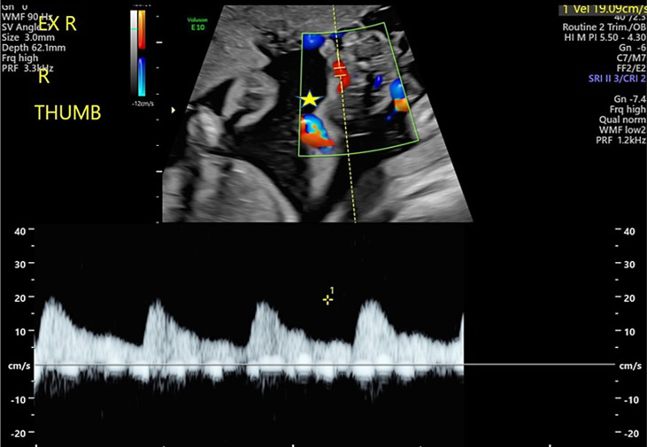
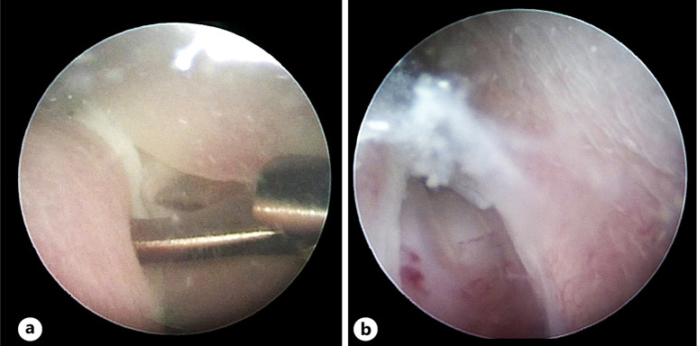

1610 — Tách màng ối sau can thiệp bào thai: chẩn đoán, phân độ & xử trí / Chorioamniotic membrane separation after fetal intervention
Tags: pattern:tach-mang-oi pattern:day-oi pattern:roi-oi-non pattern:sinh-non vung:buong-tu-cung vung:banh-nhau protocol:sieu-am-thai protocol:Doppler protocol:MRI-thai
Mức chắc chắn (certainty): tổng hợp y văn (literature synthesis) — thử nghiệm ngẫu nhiên 2025 (PMC12639666), đoàn hệ sau mổ thai 2024 (PMC11633867), đoàn hệ CAS 2016 (PMC5039039), đoàn hệ dải ối giả sau laser 2026 (PMC13002228) + 2 ca nguyên văn minh họa (PMC4796085, PMC6452456).
Câu chốt của bài: sau 16 tuần, màng ối và màng đệm đã dính nhau — thấy khoảng dịch giữa hai màng là bất thường. Sau can thiệp bào thai, tách màng ối (chorioamniotic separation — CAS) bắt đầu từ chỗ chọc trocar, màng ối không có mạch máu nên không tự liền, và không có thuốc/mẹo nào chứng minh gắn lại được. Việc phải làm là đo – phân độ – theo dõi sát biến chứng (rỉ ối, sinh non, nhiễm trùng, dải ối giả chèn/hoại tử chi), chứ không phải "chờ màng dính lại". CAS ≥ 20 mm hoặc lan > 1/2 buồng tử cung = nhóm nguy cơ cao, cần theo dõi như thai nguy cơ cao.
1. Tổng quan bệnh học – cơ chế hình ảnh
- Giải phẫu – mốc thời gian: màng ối (amnion) và màng đệm (chorion) dính nhau sinh lý từ 14–16 tuần; trước 14 tuần thấy hai màng tách nhau là bình thường. Sau 16 tuần, CAS hiếm và bất thường (PMC5039039).
- Cơ chế sau can thiệp (quan trọng nhất): trocar/ống soi xuyên qua màng đã dính, tạo khiếm khuyết; dịch ối chen vào giữa hai lớp và bóc tách dần. Màng ối không có mạch máu → không có quá trình lành, nên tách thường kéo dài/tiến triển (PMC12639666). Ở tuổi thai sớm, màng chưa dính hoàn toàn nên càng dễ bong.
- Tần suất (định lượng):
- Sau laser TTTS (fetoscopic laser photocoagulation — FLP): 7,5–20,7% (PMC12639666).
- Sau mổ thoát vị tủy–màng não (fetal spina bifida repair) mở tử cung: 11,9% (23/194; PMC11633867).
- Sau amniocentesis/chọc ối: là nguyên nhân iatrogenic hay gặp trong các loạt CAS (40% ca CAS có tiền sử chọc ối trong PMC5039039) — không có tỷ lệ chung đáng tin vì phụ thuộc kỹ thuật và tuổi thai.
- Hậu quả (định lượng):
- CAS sau 17 tuần (mọi nguyên nhân): sinh non 57,5% vs 17,1%; sinh non tự nhiên 39,4% vs 9,5%; sinh < 28 tuần 25,8% vs 3,2% nếu chẩn đoán < 24 tuần; thai lưu 9,7% vs 0% khi chẩn đoán < 24 tuần (PMC5039039).
- Sau FLP (phân tích gộp 1.881 ca): CAS làm tăng PPROM < 34 tuần OR 3,98 (1,76–9,03), sinh < 32 tuần OR 1,80 (1,16–2,80), giảm sống sót sơ sinh OR 0,41 (0,24–0,70); can thiệp sớm hơn 1,07 tuần, sinh sớm hơn 1,74 tuần (PMC12639666).
- Sau mổ thai mở (fSB): PPROM 69,6% vs 24,1%, nhiễm trùng ối 22,7% vs 7,1%, viêm màng đệm–ối mô học 40% vs 14,7%, tuổi thai sinh 35,3 vs 36,7 tuần, nằm viện sau mổ 35 vs 17 ngày (PMC11633867).
- Dải ối giả (pseudoamniotic band sequence — PABS): 1,3% (11/816) sau FLP; chỉ 27,3% được phát hiện trước sinh; 3 ca hoại tử/cụt ngón vì chẩn đoán muộn (PMC13002228). Đây là biến chứng nặng nhất nhưng bỏ sót nhiều nhất.
- TẠI SAO siêu âm thấy được (vật lý):
- Dịch ối là môi trường lỏng, đồng nhất → hốc âm (anechoic); hai màng là cấu trúc mỏng, hồi âm cao, nhìn rõ khi có lớp dịch ngăn cách.
- Màng ối mỏng, di động theo sóng dịch; màng đệm dày hơn, dính thành tử cung — phân biệt bằng độ dày, độ di động và Doppler (màng đệm có mạch máu thai, màng ối không).
- MRI ít dùng cấp cứu; T2 thấy dịch giữa hai màng nhưng không thay thế siêu âm real-time — chỉ dùng khi siêu âm khó (béo phì, thai lớn, vị trí sau).
2. Mẫu hình + chẩn đoán phân biệt theo bối cảnh (Gamut)
- Theo nguyên nhân: iatrogenic sau FLP/fetoscopy (hay gặp nhất, khởi phát ở chỗ chọc), sau chọc ối/chọc máu cuống rốn, sau đặt shunt/đốt nhiệt, tự phát (hiếm; có ca kèm sẹo cơ tử cung — PMC4796085), sau PPROM (màng tách do rỉ ối — PMC6452456), bất thường nhiễm sắc thể/dính màng muộn (dịch ối giữa hai màng, không có can thiệp).
- Theo hình thái: khu trú (focal) — một vùng tách nhỏ; lan rộng (extensive/complete) — tách gần toàn bộ, chỉ còn dính ở chỗ cắm dây rốn; có dải/màng lơ lửng; có phần thai nằm ngoài khoang ối (dấu hiệu nguy cơ PABS); kèm đa/thiểu ối.
- Theo biến chứng: rỉ ối/PPROM (màng yếu, dễ vỡ), sinh non, nhiễm trùng ối (màng mất hàng rào), dải ối giả quấn chi/dây rốn, thai lưu (thắt dây rốn), suy thai.
- Gamut chẩn đoán phân biệt hình ảnh:
- PPROM — màng vỡ, thiểu ối, màng lơ lửng tự do, có thể thấy "tram sign"; CAS có thể còn đủ dịch và màng còn nguyên.
- Thông vách (iatrogenic septostomy) — lỗ thủng ở vách giữa hai thai, dịch thông giữa hai buồng ối, thường giải quyết đa ối/thiểu ối; CAS là tách màng ối–đệm trong cùng một buồng ối, không phải vách giữa hai thai.
- Dải ối bẩm sinh (amniotic band sequence — ABS) — dải xơ mảnh, hồi âm cao, bám vào chi/dây rốn, gây thắt nghẹt; ABS không có khoảng dịch rộng giữa hai màng như CAS; PABS là biến chứng của CAS.
- Máu tụ dưới màng đệm (subchorionic hematoma) — khối hồi âm cao/hỗn hợp, không phải hốc âm di động; có thể đẩy màng nhưng bản chất là máu.
- Vách ối/dính tử cung (amniotic sheet/synechia) — dải dày, cố định, không thay đổi theo tư thế; thường có tiền sử mổ/nhiễm trùng tử cung.
- Tách màng sinh lý < 14 tuần — hai màng chưa dính; không chẩn đoán CAS ở tuổi thai này.
3. Bảng so sánh phân biệt (ma trận đối chiếu)
| Thực thể (entity) | Hình ảnh điển hình | Chốt vào (rule-in) | Chốt loại (rule-out) | Gợi ý xác nhận |
|---|---|---|---|---|
| CAS sau can thiệp (iatrogenic) | Hốc âm giữa màng ối và màng đệm, màng ối mỏng di động, bắt đầu từ vị trí trocar; đo được khoảng cách lớn nhất | Tiền sử can thiệp trong 48 giờ–2 tuần + hốc dịch giữa hai màng + màng ối còn nguyên | Màng đã vỡ, thiểu ối, màng lơ lửng tự do → PPROM, không chỉ CAS | Siêu âm real-time + Doppler; đo mm và % buồng tử cung |
| CAS tự phát | Giống CAS nhưng không tiền sử can thiệp; có thể kèm sẹo cơ tử cung, bất thường NST | Không can thiệp + hốc dịch giữa hai màng sau 16 tuần | Có can thiệp trong 2 tuần → iatrogenic | Hỏi bệnh sử, siêu âm hình thái, karyotype nếu có chỉ định |
| PPROM | Thiểu ối, màng lơ lửng, bể ối nhỏ; dịch âm đạo; ferning/IGFBP-1 dương | Rỉ ối + thiểu ối + màng vỡ | Còn đủ dịch, màng nguyên, không rỉ → CAS đơn thuần | Khám mỏ vịt, test dịch ối, siêu âm AFI |
| Thông vách iatrogenic | Lỗ ở vách giữa hai thai, dịch thông giữa hai buồng ối; bể ối hai thai thay đổi | Lỗ vách + thay đổi cấp dịch hai buồng | Tách nằm trong một buồng ối → CAS | Doppler màu, quan sát vách liên tục |
| Dải ối bẩm sinh (ABS) | Dải xơ mảnh hồi âm cao bám chi/dây rốn, thắt nghẹt, có thể cụt chi | Dải bám + thắt chi/dây rốn | Chỉ có hốc dịch giữa hai màng, không dải → CAS | Siêu âm 3D, khảo sát toàn bộ chi và dây rốn |
| Dải ối giả (PABS) sau CAS | Sau FLP: dải/màng lơ lửng quấn chi, chi phù, Doppler còn mạch; có thể cụt ngón | CAS + dải quấn chi/dây rốn sau can thiệp | Không dải, chỉ tách màng → CAS đơn thuần | Siêu âm chi/dây rốn mỗi lần; nội soi bào thai cắt dải |
| Máu tụ dưới màng đệm | Khối hồi âm cao/hỗn hợp, không di động, không phải hốc âm | Khối hồi âm cao + không có hốc dịch di động | Hốc âm di động giữa hai màng → CAS | Siêu âm lặp, Doppler |
| Vách ối/dính tử cung | Dải dày, cố định, bám thành tử cung, không đổi theo tư thế | Dải dày cố định + tiền sử mổ/nhiễm trùng | Hốc dịch mới xuất hiện sau can thiệp → CAS | So phim trước can thiệp |

*(A,B) Siêu âm: màng ối (đầu mũi tên) tách khỏi màng đệm (mũi tên), dịch ối giữa hai lớp; thai trong khoang ối. (C,D) Đại thể: màng ối bong khỏi bánh nhau, còn dính ở vùng dây rốn. Đây là ca tách màng ối hoàn toàn tự phát (không can thiệp) — dùng để nhận diện hình thái, không đại diện CAS sau can thiệp. Nguồn: Joung EJ et al., Obstet Gynecol Sci 2016 (PMC4796085), CC BY-NC 3.0 (giữ nguyên bản).*4. Protocol chụp + hệ phân độ/điểm chuẩn hóa
- Siêu âm (chuẩn vàng, không cần MRI):
- Đường bụng + đường âm đạo; khảo sát màng ối/màng đệm ở nhiều mặt cắt, đặc biệt vị trí trocar sau can thiệp.
- Đo khoảng cách lớn nhất giữa màng ối và màng đệm (mm), phần trăm buồng tử cung bị tách, và tiến triển (tăng thêm > 5 mm so với lần trước) — theo định nghĩa PMC11633867.
- Đánh giá lượng ối (AFI/DVP), cổ tử cung, sinh trắc thai, Doppler dây rốn, và khảo sát toàn bộ chi tìm dải quấn (PABS).
- Sau FLP: siêu âm trong 48 giờ (đây là tiêu chí chính của thử nghiệm PMC12639666), sau đó mỗi 1–2 tuần tùy mức độ.
- Phân độ (hai hệ đang dùng, chưa thống nhất):
- Theo khoảng cách (Wawrla-Zepf 2024, PMC11633867): nhỏ ≤ 20 mm, lớn > 20 mm; tiến triển nếu tăng > 5 mm.
- Theo thể tích buồng tử cung (Bibbo 2016, PMC5039039): nhẹ ≤ 1/4, trung bình 1/4–1/2, nặng > 1/2 buồng tử cung.
- Lưu ý: không có ngưỡng mm nào được chứng minh là "an toàn"; phân độ để theo dõi và tư vấn, không để quyết định mổ.
- Theo dõi & xử trí (khung thực hành):
- CAS khu trú, không rỉ ối, thai ổn: theo dõi ngoại trú với siêu âm định kỳ; nhập viện dự phòng không bắt buộc — trong đoàn hệ 194 ca, kết cục thai không khác giữa nhóm nhập viện và không nhập viện (PMC11633867).
- CAS lan rộng/toàn bộ, có cơn co, ra máu, rỉ ối, hoặc thai ngoài khoang ối: nhập viện, theo dõi nhiễm trùng (CRP/bạch cầu, cấy), corticosteroid 24+0–33+6 tuần nếu nguy cơ sinh trong 7 ngày, magnesium sulfate < 32 tuần để bảo vệ não thai (phối hợp bài 587).
- PPROM: kháng sinh theo phác đồ (thường ampicillin + macrolide trong 10 ngày, tùy đơn vị), theo dõi viêm màng đệm–ối, không đặt cerclage khi đã rỉ ối/nhiễm trùng.
- PABS: cắt dải bằng fetoscopy nếu phát hiện trước sinh và còn khả thi; nếu bỏ sót → nguy cơ cụt chi/hoại tử (PMC13002228, PMC11763431).
- Vá màng/amniopatch: là can thiệp thử nghiệm cho PPROM iatrogenic; chưa có bằng chứng cho CAS đơn thuần — không tư vấn như điều trị chuẩn.
- Sinh: cá thể hóa; không có tuổi thai sinh tối ưu riêng cho CAS; sau mổ thai thường sinh 34–37 tuần theo phác đồ trung tâm. Ưu tiên sinh tại trung tâm có hồi sức sơ sinh.
- Sơ đồ quyết định:
flowchart TD
A[Siêu âm sau can thiệp bào thai: hốc dịch giữa màng ối và màng đệm] --> B{Màng còn nguyên, còn đủ dịch?}
B -->|Không: màng vỡ, thiểu ối| C[PPROM: kháng sinh, theo dõi nhiễm trùng, không cerclage]
B -->|Có| D[Chẩn đoán CAS]
D --> E[Đo khoảng cách lớn nhất + % buồng tử cung + tiến triển > 5 mm]
E --> F{≤ 20 mm và khu trú, thai ổn?}
F -->|Có| G[Theo dõi ngoại trú: siêu âm 1–2 tuần, đếm cử động, khảo sát chi]
F -->|Không| H[Nhập viện: theo dõi co, nhiễm trùng, corticosteroid 24–33+6 tuần, MgSO4 < 32 tuần]
G --> I{Có dải quấn chi/dây rốn?}
H --> I
I -->|Có| J[Fetoscopy cắt dải nếu còn khả thi]
I -->|Không| K[Tiếp tục theo dõi đến khi sinh tại trung tâm có NICU]
5. Biến thể bình thường và cạm bẫy
- Trước 14 tuần: tách màng là sinh lý — đừng chẩn đoán CAS khi màng chưa dính; mốc dính 14–16 tuần.
- CAS không đồng nghĩa PPROM: CAS có thể còn đủ ối, màng nguyên; PPROM là màng đã vỡ. Hai tình trạng có thể cùng tồn tại — đừng loại trừ PPROM chỉ vì thấy hốc dịch.
- Đừng nhầm thông vách với CAS: thông vách là lỗ ở vách giữa hai thai; CAS là tách màng ối–đệm trong một buồng ối. Điều trị và tiên lượng khác nhau.
- Màng "lơ lửng" sau 20 tuần có thể chỉ là nếp gấp: màng mỏng gấp nếp tạo hình ảnh giả tách; đổi đầu dò/tư thế, dùng Doppler và so sánh nhiều mặt cắt.
- PABS bị bỏ sót vì không khảo sát chi: chỉ 27,3% ca PABS được phát hiện trước sinh; mỗi lần siêu âm sau can thiệp phải xem đủ 4 chi + dây rốn, tìm dải, phù, giảm vận động.
- "CAS nhỏ thì lành" — không hoàn toàn: CAS nhỏ có thể tiến triển nhanh; đo lại và so sánh quan trọng hơn con số tuyệt đối một lần.
- Nhập viện dự phòng không cải thiện kết cục trong nghiên cứu quan sát — nhưng đây là bằng chứng yếu; quyết định theo triệu chứng, khoảng cách đến viện, khả năng theo dõi.
- Corticosteroid không điều trị CAS: chỉ để trưởng thành phổi khi nguy cơ sinh non; không làm màng dính lại.
6. Tự lượng giá — Blind Quiz (ảnh trơn ngoài, đáp án giấu trong thẻ bấm-mở)
Ca 1 — Thai 17 tuần 1 ngày, ra dịch âm đạo nhiều, không tiền sử can thiệp:

- Câu hỏi: Mô tả dấu hoa thị. Đây là tách màng ối hay màng đã vỡ? Cần tìm thêm dấu hiệu gì?
Bấm để hiện đáp án (findings + chẩn đoán)
- Dấu hiệu: các mặt cắt (A–D) cho thấy *khoảng dịch (dấu ) giữa màng ối và màng đệm, màng ối mỏng tách khỏi màng đệm; thai còn trong khoang ối; lượng dịch thay đổi tùy mặt cắt.
- Chẩn đoán: tách màng ối một phần (partial CAS), trong bối cảnh rỉ ối/PPROM — ca gốc được chẩn đoán CAS sau khi rỉ ối ở 17 tuần.
- Chốt: hốc dịch giữa hai màng + màng còn nguyên = CAS; nếu thiểu ối + màng lơ lửng tự do + test dịch ối dương = PPROM. Hai tình trạng có thể cùng có.
- Việc cần làm: khám mỏ vịt/test dịch ối, siêu âm AFI, theo dõi nhiễm trùng, tư vấn tiên lượng sinh non; không đặt cerclage nếu đã rỉ ối.
- Lưu ý trung thực: ca minh họa là CAS tự phát sau PPROM, không phải sau can thiệp bào thai — dùng để nhận diện hình thái.
- Nguồn: Govaerts J et al., Clin Case Rep 2019 (PMC6452456), CC BY-NC-ND 4.0.
Ca 2 — Thai 21 tuần 5 ngày, không chọc ối, siêu âm thấy màng ối bong gần toàn bộ:
- Câu hỏi: Màng nào bong, còn dính ở đâu? Tách hoàn toàn có nghĩa là phải chấm dứt thai kỳ? Theo dõi gì?
Bấm để hiện đáp án
- Dấu hiệu: (A,B) màng ối (đầu mũi tên) tách khỏi màng đệm (mũi tên), dịch ối giữa hai lớp; (C,D) đại thể: màng ối bong khỏi bánh nhau, còn dính ở chỗ cắm dây rốn — tách hoàn toàn.
- Chẩn đoán: tách màng ối hoàn toàn tự phát; ca gốc phát hiện ở 21 tuần 5 ngày, không can thiệp trước đó; mổ lấy thai cấp ở 27 tuần vì suy thai, phát hiện khiếm khuyết cơ tử cung ở đáy; trẻ sống, phát triển bình thường.
- Chốt: tách hoàn toàn không bắt buộc chấm dứt thai kỳ nếu thai không dị tật và không nhiễm trùng; theo dõi sát, sinh đúng lúc tại trung tâm có NICU.
- Việc cần làm: siêu âm hình thái, tìm bất thường NST/dị tật, theo dõi ối–nhiễm trùng–tim thai, tư vấn tiên lượng sinh non.
- Nguồn: Joung EJ et al., Obstet Gynecol Sci 2016 (PMC4796085), CC BY-NC 3.0.
Ca 3 — Sau laser TTTS 3 tuần, siêu âm thấy chi thai phù, có dải mảnh quấn:

- Câu hỏi: Dấu sao đánh dấu gì? Vì sao chi phù mà Doppler còn mạch? Chẩn đoán và xử trí?
Bấm để hiện đáp án
- Dấu hiệu: siêu âm Doppler chi trên: dải/màng quấn quanh chi (ngôi sao vàng), phần ngoại vi phù nhưng Doppler vẫn có phổ động mạch — chưa tắc hoàn toàn.
- Chẩn đoán: dải ối giả (pseudoamniotic band sequence — PABS) sau laser TTTS, biến chứng của CAS; dải xơ hình thành từ màng ối bong.
- Xử trí: fetoscopy cắt dải nếu phát hiện trước sinh và còn khả thi; nếu bỏ sót → hoại tử/cụt chi (3 ca trong đoàn hệ 816 ca) hoặc thắt dây rốn → thai lưu.
- Chốt: sau mọi can thiệp bào thai, phải khảo sát đủ chi và dây rốn; PABS chỉ được phát hiện trước sinh 27,3%.
- Nguồn: Lemoine FV et al., Fetal Diagn Ther 2026 (PMC13002228), CC BY-NC 4.0.
Ca 4 — Cùng ca PABS, hình ảnh nội soi bào thai:

- Câu hỏi: (a) mô tả tổn thương; (b) sau cắt còn gì? Biến chứng cần theo dõi sau thủ thuật?
Bấm để hiện đáp án
- Dấu hiệu: (a) dải ối quấn quanh chi, nằm ở đầu kéo nội soi; (b) sau cắt dải, chi có vết rách/trợt da nhưng còn tưới máu.
- Chẩn đoán: PABS — điều trị bằng cắt dải qua nội soi bào thai.
- Theo dõi: phù/hoại tử chi, cử động, Doppler; sinh tại trung tâm có phẫu thuật nhi; tư vấn di chứng thần kinh–cơ nếu tổn thương kéo dài.
- Bài học: chẩn đoán sớm = còn cứu được chi; chẩn đoán muộn = cụt ngón/chi.
- Nguồn: Lemoine FV et al., Fetal Diagn Ther 2026 (PMC13002228), CC BY-NC 4.0.
Bài liên quan chéo
- 500 – Tổng quan Vú & Sản Phụ khoa
- 566 – Song thai: xác định màng đệm–màng ối & TTTS/TAPS
- 587 – Dự phòng sinh non sau laser TTTS
- 588 – Song thai MCDA một thai chết
- 1603 – Vasa previa: laser nội soi thai
- 1604 – Thai kỳ sau chửa ở sẹo mổ lấy thai
Ảnh
1610_tach-mang-oi-sieu-am_PMC4796085.jpg— Joung EJ et al., Obstet Gynecol Sci 2016, Fig. 1, CC BY-NC 3.0 (giữ nguyên bản, không cắt/ghép).1610_tach-mang-oi-khoang-dich_PMC6452456.jpg— Govaerts J et al., Clin Case Rep 2019, Fig. 1, CC BY-NC-ND 4.0 (giữ nguyên bản).1610_dai-oi-gia-sau-laser_PMC13002228.jpg,1610_cat-dai-oi-noi-soi_PMC13002228.jpg— Lemoine FV et al., Fetal Diagn Ther 2026, Fig. 1 & 3, CC BY-NC 4.0 (giữ nguyên bản).- Nguồn + giấy phép từng ảnh:
images/CREDITS.md.
Disclaimer y tế: Không dùng để chẩn đoán độc lập khi chưa có người hướng dẫn.